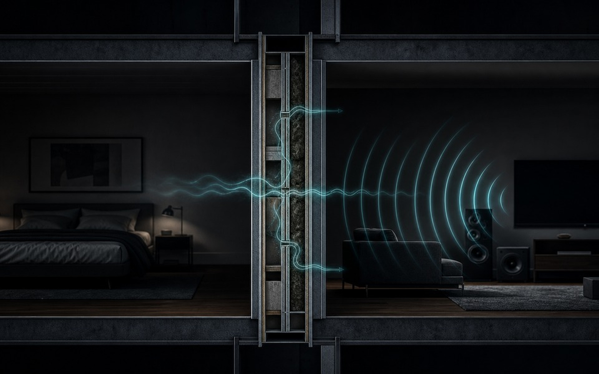

Шум от соседей: с чего начать
Когда соседи мешают спать, хочется сразу купить «звукоизоляцию» и закрыть вопрос. Но звук не знает, куда вы направили бюджет — он идёт туда, где конструкция слабее всего. Поэтому первый шаг не в магазине, а в понимании: что именно вы слышите и по какому пути оно доходит до вас.

Два разных шума — и два разных лечения
Представьте, что звук — это вода. Она может течь по трубе и по стене — и это разные истории. Воздушный шум — всё, что рождается в воздухе: разговоры, смех, телевизор, музыка. Он давит на стену, как ветер на окно, и часть энергии проходит сквозь перегородку. Ударный шум — другое: шаг, упавший предмет, стиральная машина на жёстких ножках. Здесь нет «волны в воздухе» — есть удар по полу, вибрация уходит в плиту перекрытия и приходит к вам снизу или сбоку уже как дрожь конструкции.
Отсюда и разные решения. Против воздушного шума нужны масса, многослойность и герметичность — чтобы перегородка была тяжёлой и без дыр. Против ударного — упругая прослойка, которая гасит вибрацию, а не передаёт её дальше. Частая ошибка: усилить стену от разговоров, а продолжать слышать топот — потому что топот шёл через потолок, а не через стену. Подробнее об ударном шуме сверху — в отдельной статье про шум с потолка.
Почему «сделать стену потолще» не всегда работает
Звук не обязан идти через ту поверхность, которую вы усилили. В многоквартирном доме у него десятки обходных путей: вентиляционный короб, общий стояк, щель между полом и стеной, тонкий участок перегородки у дверного проёма, розетка, пробитая насквозь в общую стену. В акустике это называют фланкированием — звук обходит основную преграду по боковому пути. На практике это выглядит так: вы потратились на тяжёлую стену к соседу, а телевизор всё равно слышен — потому что он приходит через потолок, шахту или щель за плинтусом.
Без диагностики легко укрепить не то место. Это не значит, что звукоизоляция бесполезна — значит, сначала нужно понять карту путей. Именно для этого делают акустический замер: инженер сопоставляет ваши ощущения с измерениями и показывает, какой путь доминирует. О слабых местах в контуре — в материале про акустические мостики и щели.
Ситуация
Семья сделала дорогую перегородку к шумному соседу. Сосед с другой стороны той же комнаты почти не слышен, а первый — как прежде.
Что проверяет ЦИА
Классический обходной путь: шум идёт не через усиленную стену, а через короб, потолок или слабое примыкание. Замер строит карту — и только потом имеет смысл вкладываться в конструкции.
С чего начать, пока ремонт не начат
Первое — описать проблему предметно. Не «соседи ужасные», а «с 23:00 слышу бас из телевизора сверху» или «шаги детей — глухой стук в спальне». Зафиксируйте направление: сверху, сбоку, из коридора, из вентиляционной решётки. Второе — соберите план квартиры и фото голых конструкций, если ремонт идёт: стены без отделки, потолок, узлы примыканий. Третье — получите инженерный взгляд: на раннем этапе подойдёт дистанционная оценка, если нужна диагностика на объекте — замер.
На основе данных решается следующий шаг: достаточно рекомендаций, нужен полноценный проект под ремонт или сначала переговоры с управляющей компанией. Проект сразу не всегда нужен — но диагностика почти всегда окупается, потому что отсекает лишние траты. Разница между замером и проектом — в отдельной статье замер vs проект.
Когда дело не только в вашей квартире
Иногда слабое звукоизоляционное решение заложено в доме при строительстве: тонкие перегородки, жёсткая стяжка у соседа сверху, общие шахты. Полностью «отрезать» соседа с одной стороны невозможно, если перегородка между вами — единственная и она же тонкая. Честный инженер скажет, где граница вашей зоны ответственности: что реально улучшить в вашей квартире, а что потребует участия соседа или УК.
Это не отказ от помощи — это экономия ожиданий. Лучше знать заранее, что потолок с вашей стороны даст заметный, но не абсолютный эффект, чем поверить в обещание «полной тишины за две недели». Мы не даём фиктивных цифр в децибелах без проекта и условий монтажа — лабораторный Rw на паспорте материала и реальность в вашей спальне часто расходятся.
Связь с ремонтом: почему время важно
Звукоизоляция — не плёнка поверх готовых стен, а часть конструкции. Каркас, слои, герметизация узлов закладываются на черновом этапе, до чистовой отделки. Оптимальный момент подключить акустика — когда видны перекрытия и перегородки, но ещё не закрыт гипсокартон. Подробнее об этапах — в статье когда подключать акустика при ремонте. Для квартир проект привязывают к планировке, типу перекрытия и тому, какие комнаты критичны.
Журнал шума: простой, но полезный
Ведите короткие записи: дата, время, что слышно, откуда кажется идёт. «Пятница, 22:40, гул вентилятора и голоса — из решётки над кроватью» ценнее, чем «постоянно шумно». На замере инженер сопоставит ваш журнал с измерениями — и часто всплывают закономерности, которые вы сами не замечали. Если шум не от соседей, а от вентиляции или стояка — это отдельная тема: шум вентиляции и труб.
Переговоры с соседями и управляющей компанией
Не весь шум — от соседей-людей. Гул из шахты, стук стояка при сливе, лифт за стеной — это зона УК или общедомового оборудования. Акустический проект в вашей квартире не починит изношенный лифт, но помогает чётко разделить: что вы можете сделать сами, а куда писать заявку. Иногда диалог с соседом тоже часть решения — например, если у него жёсткий пол без прослойки и он готов обсудить плавающую стяжку при своём ремонте.
Чего не стоит делать в спешке
Покупать материалы «как у знакомых» до диагностики. Клеить звукоизоляцию на готовую стену без понимания пути шума. Верить обещаниям «минус 20 дБ» без проекта и контроля монтажа. Путать гул внутри своей комнаты с шумом соседей — для первого нужна внутренняя акустика, для второго — ограждения; подробнее в статье звукоизоляция vs акустика. Разумный порядок: описание → оценка или замер → решение о проекте → ремонт по узлам.
Куда двигаться дальше
Если шум идёт преимущественно сверху, начните с материала про ударный шум с потолка — там разобраны конструкции перекрытия. Когда слышны голоса и музыка, но не топот, полезно понять разницу между звукоизоляцией и внутренней акустикой — это разные задачи и разные решения. Для квартиры в новостройке часто нужен комплексный проект сразу по нескольким ограждениям.
Перед ремонтом имеет смысл пройти дистанционную оценку с планом и фото — инженер подскажет, достаточно ли этого или нужен выездной замер. Узлы примыканий и обходные пути разбираются в статье про акустические мостики; если шум идёт из шахты — см. шум вентиляции и труб. Этапы подключения акустики к ремонту — в материале когда подключать акустика.
Частые вопросы
Оставить заявку
Опишите помещение и задачу — подскажем формат работы ЦИА. Если вы прошли Проблемомер, поля заполнятся автоматически.
Задача отправлена